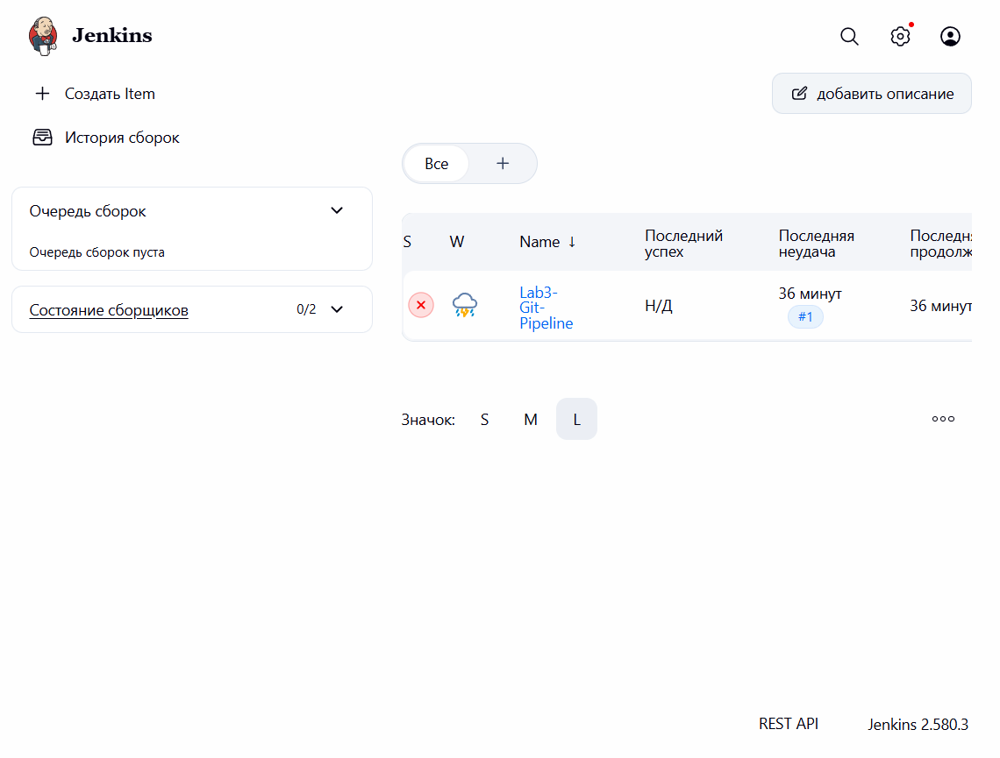
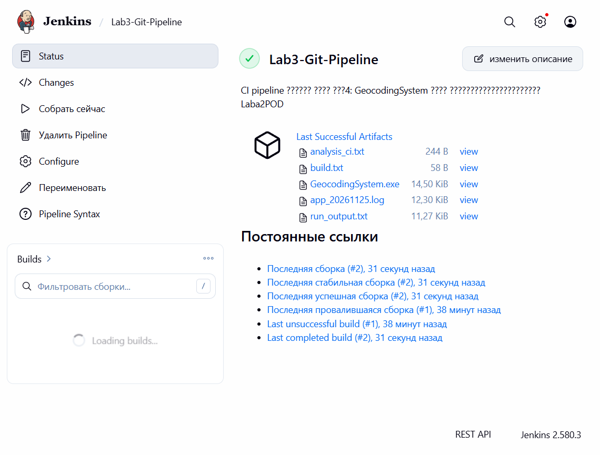
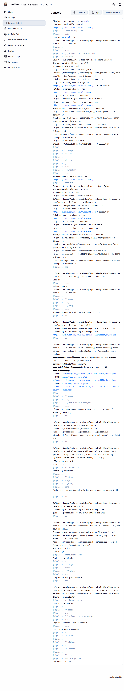
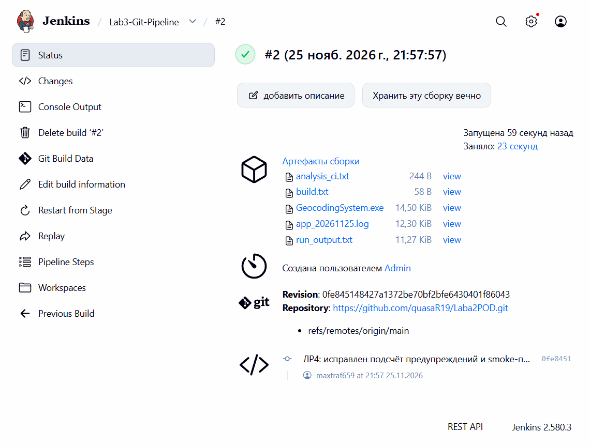

Проект: геокодирование, вариант 14 · C# / .NET Framework 4.7.2 · репозиторий Laba2POD
Всё необходимое: Jenkinsfile, этапы, скриншоты, артефакты, анализ и ответы на вопросы — в одном обзоре.
Проверено локально 25.11.2026: Jenkins запущен на http://127.0.0.1:8080, задача Lab3-Git-Pipeline создана из SCM (Pipeline script from SCM), конвейер выполнил сборку #2. Лог сборки и скриншоты — ниже.
Commit в GitHub: 243a39a → origin/main (https://github.com/quasaR19/Laba2POD.git), добавлен корневой Jenkinsfile и обновлён .gitignore.
CI (Continuous Integration) — частая интеграция изменений в общую ветку с автоматической сборкой и тестами. CD (Continuous Delivery) — каждая успешная сборка готова к развёртыванию; Continuous Deployment — развёртывается автоматически.
Jenkins — open-source сервер автоматизации на Java: сборка, тесты, статический анализ, деплой, интеграция с Git/Docker. Расширяется плагинами; pipeline описывается на Groovy в двух вариантах: Declarative (проще, читаемый) и Scripted (гибче). В работе используется Declarative Pipeline.
| Конструкция Groovy DSL | Назначение | Где использовано |
|---|---|---|
pipeline { } | Корневой блок Declarative Pipeline | весь файл |
agent any | Выполнение на любом доступном агенте | корень |
environment { } | Переменные окружения | PROJECT_NAME, WORK_DIR, SOLUTION, MSBUILD |
stages { stage('...') { } } | Этапы конвейера | Checkout, Setup, Lint, Test, Archive |
steps { }, bat '...', echo | Шаги и команды Windows | все этапы |
checkout scm | Получение исходников из Git | Checkout |
archiveArtifacts | Публикация артефактов сборки | Lint, Test, Archive |
post { always / success / failure } | Действия по итогам сборки | Lint, Test, корень pipeline |
После всех этапов выполняется блок post: сообщение о номере сборки и статус success/failure. На этапах Lint и Test блок post { always { archiveArtifacts ... } } сохраняет отчёты даже при падении.
| Stage | Назначение | Результат |
|---|---|---|
| Checkout | Клонирование main, вывод короткого SHA | исходники в workspace |
| Setup | Скачивание nuget.exe и восстановление пакетов по packages.config | папка packages/ |
| Lint & Static Analysis | Сборка с StyleCop, SonarAnalyzer, SecurityCodeScan; подсчёт предупреждений | analysis_ci.txt |
| Test | Smoke-запуск GeocodingSystem.exe и проверка лога Serilog | run_output.txt, logs/app_*.log |
| Archive | Формирование artifacts/build.txt и публикация артефактов | артефакты сборки в Jenkins |
Файл: E:\Laba1POD\Jenkinsfile · Script Path в задаче Jenkins: Jenkinsfile.
// ЛР №4 — базовый CI/CD конвейер в Jenkins (Declarative Pipeline, Groovy DSL)
// Проект: GeocodingSystem (ЛР №1), репозиторий: Laba2POD (ЛР №2), вариант 14.
// Script Path в задаче Jenkins: Jenkinsfile (корень репозитория).
pipeline {
agent any
environment {
PROJECT_NAME = 'Laba2POD'
WORK_DIR = 'GeocodingSystem/GeocodingSystem'
SOLUTION = 'GeocodingSystem/GeocodingSystem/GeocodingSystem.sln'
MSBUILD = 'E:\\Visual Studio Community\\MSBuild\\Current\\Bin\\MSBuild.exe'
}
stages {
stage('Checkout') {
steps {
echo "Клонирование проекта ${env.PROJECT_NAME} из ${env.GIT_URL}"
checkout scm
bat 'git rev-parse --short HEAD'
echo "Рабочая папка: ${env.WORKSPACE}"
}
}
stage('Setup') {
steps {
echo 'Установка зависимостей (packages.config) ...'
bat 'if not exist "%WORK_DIR%\\nuget.exe" curl.exe -L -o "%WORK_DIR%\\nuget.exe" https://dist.nuget.org/win-x86-commandline/latest/nuget.exe'
bat 'cd /d "%WORK_DIR%" && nuget.exe restore GeocodingSystem.sln -PackagesDirectory packages'
}
}
stage('Lint & Static Analysis') {
steps {
echo 'Сборка со статическими анализаторами (StyleCop / Sonar / SecurityCodeScan) ...'
bat '"%MSBUILD%" "%SOLUTION%" /t:Rebuild /p:Configuration=Debug /v:minimal > analysis_ci.txt 2>&1'
bat 'powershell -NoProfile -Command "$w = (Select-String -Path analysis_ci.txt -Pattern \': warning \').Count; Write-Host (\'MSBuild warnings: \' + $w)"'
}
post {
always {
archiveArtifacts artifacts: 'analysis_ci.txt', allowEmptyArchive: true
}
}
}
stage('Test') {
steps {
echo 'Smoke-тест: запуск GeocodingSystem.exe и проверка логов Serilog ...'
bat 'cd /d "%WORK_DIR%\\bin\\Debug" && (GeocodingSystem.exe < NUL > run_output.txt 2>&1)'
bat 'powershell -NoProfile -Command "if (-not (Get-ChildItem \'%WORK_DIR%/bin/Debug/logs/app_*.log\' -ErrorAction SilentlyContinue)) { throw \'Serilog log file not found\' }; Get-ChildItem \'%WORK_DIR%/bin/Debug/logs/app_*.log\' | Select-Object -ExpandProperty Name"'
}
post {
always {
archiveArtifacts artifacts: 'GeocodingSystem/GeocodingSystem/bin/Debug/run_output.txt, GeocodingSystem/GeocodingSystem/bin/Debug/logs/**', allowEmptyArchive: true
}
}
}
stage('Archive') {
steps {
echo 'Сохранение артефакта сборки ...'
bat 'if not exist artifacts mkdir artifacts && echo Build %BUILD_NUMBER% commit %GIT_COMMIT% > artifacts\\build.txt'
archiveArtifacts artifacts: 'artifacts/**, GeocodingSystem/GeocodingSystem/bin/Debug/GeocodingSystem.exe', allowEmptyArchive: true
}
}
}
post {
always {
echo "Pipeline завершён. Номер сборки: ${env.BUILD_NUMBER}"
}
success {
echo 'Все этапы прошли успешно!'
}
failure {
echo 'Один из этапов завершился с ошибкой'
}
}
}
Lab3-Git-Pipeline → тип Pipeline.https://github.com/quasaR19/Laba2POD.git; Branch: */main; Script Path: Jenkinsfile.Плагины: Git plugin, Pipeline (workflow-aggregator), GitHub Integration, Docker Pipeline — установлены вместе с зависимостями (64 плагинов).
docker-workflow 653.v2f2c08eff0ec
git 5.11.0
github 1.47.0
pipeline-model-definition 2.2293.v6e7193cec599
workflow-aggregator 608.v67378e9d3db_1 Сборка #2: SUCCESS. Ниже — фрагмент Console Output (полный лог доступен в Jenkins → Build → Console Output).
Obtained Jenkinsfile from git https://github.com/quasaR19/Laba2POD.git
Checking out Revision 0fe845148427a1372be70bf2bfe6430401f86043 (refs/remotes/origin/main)
> git.exe checkout -f 0fe845148427a1372be70bf2bfe6430401f86043 # timeout=10
0fe8451
MSBuild warnings: 0
app_20261125.log
Все этапы прошли успешно!
Finished: SUCCESSartifacts/build.txt — номер сборки и commit;GeocodingSystem.exe — собранное приложение;analysis_ci.txt — лог сборки с предупреждениями;run_output.txt и logs/app_*.log — вывод smoke-теста и логи Serilog.dist.nuget.org, Lint — от наличия MSBuild по указанному пути, Test — от корректности App.config и логгера.packages/ и nuget.exe, вынести путь к MSBuild в отдельную переменную агента, добавить жёсткий quality gate (0 предупреждений), хранить артефакты с версией коммита.



Webhook: В Jenkins включён триггер GitHub hook trigger for GITScm polling. GitHub-_webhook_ в этой среде не создан: Jenkins доступен только на 127.0.0.1:8080, а для GitHub нужен публичный адрес (например, ngrok http 8080). Для включения автоматического запуска: GitHub → Settings → Webhooks → Add webhook → Payload URL http://<публичный-адрес>/github-webhook/, Content type application/json, Events: Just the push event, Active. Скриншот этой формы нужно снять после получения публичного адреса — он не подменяется выдуманным изображением.
Построен Declarative Pipeline из пяти этапов, интегрированный с GitHub-репозиторием из ЛР №2 и проектом из ЛР №1. Jenkins автоматически получает код, восстанавливает зависимости, собирает проект со статическими анализаторами, выполняет smoke-тест и публикует артефакты. Конвейер описан в Jenkinsfile в репозитории, поэтому конфигурация сборки версионируется вместе с кодом.
CI — частая интеграция изменений с автоматической сборкой и тестами. Continuous Delivery — любая успешная версия готова к деплою. Continuous Deployment — деплой каждой успешной версии выполняется автоматически.
Declarative имеет фиксированную структуру pipeline { agent, stages, post } и проще для чтения; Scripted — это произвольный Groovy-код внутри node { }, гибче, но сложнее поддерживать.
Текстовый файл в репозитории с описанием pipeline. Jenkins читает его из SCM (Script Path), благодаря чему конфигурация CI версионируется и проходит code review.
Stage — логический этап (Checkout, Build, Test); step — отдельная команда внутри этапа (echo, bat, checkout scm, archiveArtifacts).
Артефакты сохраняют результат сборки (exe, логи, отчёты) для проверки и доставки. Webhook уведомляет Jenkins о push в GitHub, обеспечивая автоматический запуск CI без ручного Build Now.
Кэширование зависимостей, параллельные этапы, жёсткий quality gate, уведомления и версионирование артефактов по коммиту.